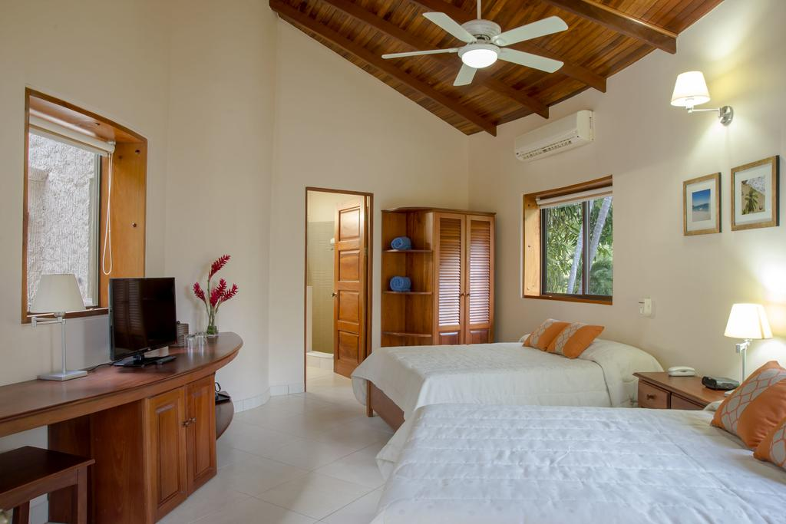
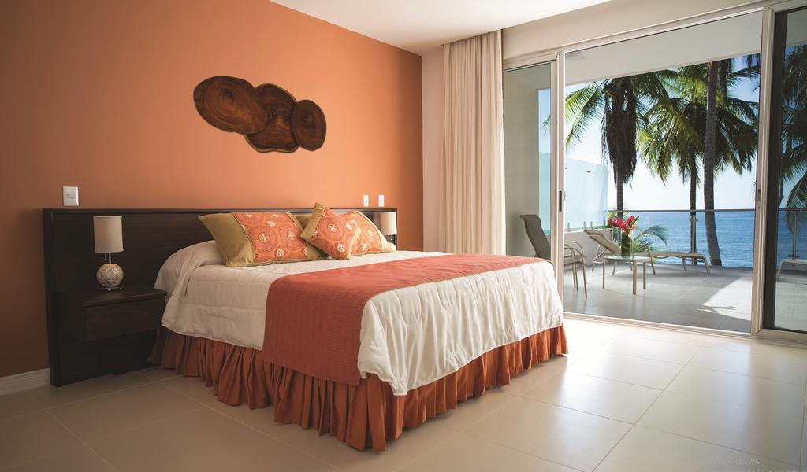
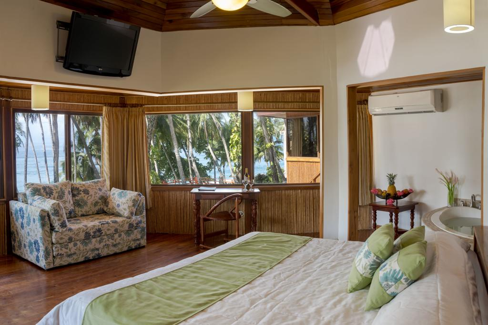

Esta suite cuenta con un minibar bien surtido, cafetera con café gratuito y balcón con vistas parciales al jardín y el mar.
Esta habitación con encanto es amplia y ofrece un ambiente relajante que combina la elegancia tropical con un estilo moderno.
Estas cabañas de estilo polinesio son muy románticas y se encuentran a 20 metros de la playa.
